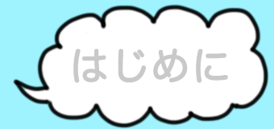
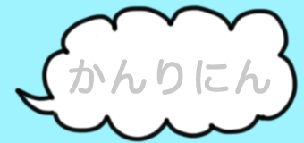
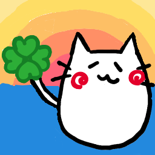

 みなさまこんにちわ！うみちょねっとです。 さまざまなうぇぶさーびす、うぇぶあぷりけーちょんをつくっています。 なかよくしてください！  海ねこ：しゅーぱーぷよぐやまーになるため、にちやおべんきょうしてる猫(twitter/blog)  あるり：くまさんになりたいおんなのこ(twitter/blog) 動作環境 : Windows Vista, 8.1, Mac OS X, iOS 最終更新 : 2014.10.7